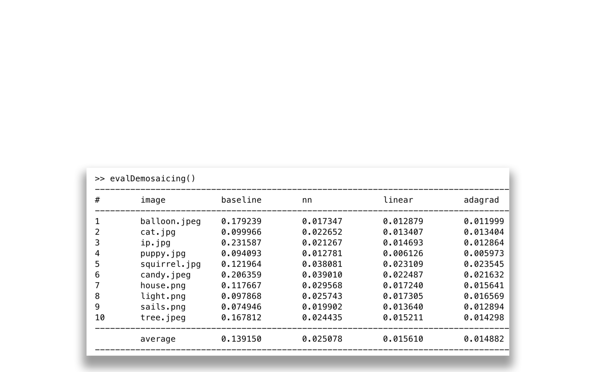

Recognition, Stereo, and Image Processing
Computer Vision
Programmer
Individual Work
Please drop me an email if you want to know more about these works.
This work aims to color black-white images by aligning R, G, B channels, and by using demosaicing methods.
This work aims to estimate image height map by using photometric stereo of lighting and shading.